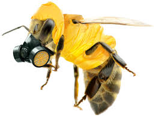
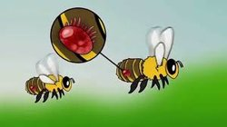
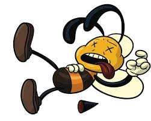

Pesticides
From U.S. News: Neonicotinoids [pesticides] are used by farmers on about 140 different crops, including corn, canola and soy. But despite truth-twisting marketing from producers, there is little evidence that neonicotinoids actually improve yields.
They do, however, kill bees by damaging their nervous systems, weakening their memories and impeding their ability to forage and fly.
Parasites
From Fact Coexist:
One problem is the tiny varroa mite, which attacks and weakens baby bees in the hive and spreads disease. New insecticides, used on the majority of crops in the U.S., are probably an even bigger problem for bees.
From The Washington Post:According to the federal agency, yellow-faced bees have been threatened by nonnative bees and other invasive animal species, as well as by human development. Although there is no evidence yet, researchers noted, too, that yellow-faced bees could be compromised by diseases transmitted by nonnative insects.
Poor Diet
From The USDA: Today, researchers have come to recognize the role of poor nutrition in honey bees' inability to deal with the many stresses they experience such as pathogens, parasites and sublethal exposure to pesticides. Such stresses may include extended periods of time when colonies have access to only a single plant or crop for food.